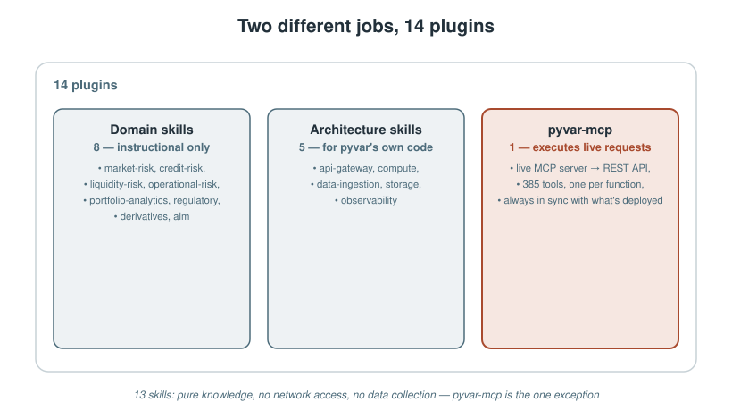
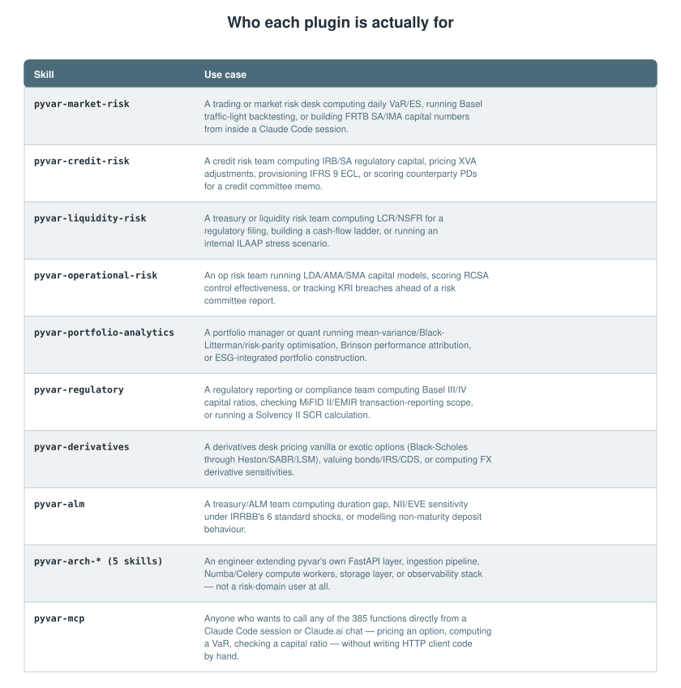
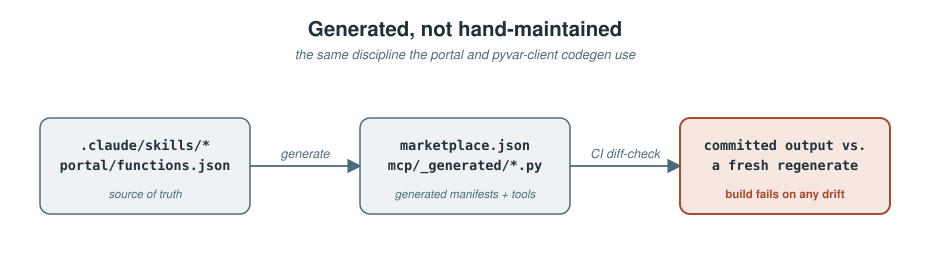

A REST API with 385 functions is only as useful as the thing calling it knowing which one to reach for. pyvar.com — an open-source (Apache-2.0), Numba-accelerated risk computation platform covering VaR, credit risk, derivatives, liquidity, operational risk, portfolio analytics, ALM, and regulatory capital — solved that by shipping straight into the tool its own build process already lived in: Claude Code.
Not as one plugin. As 14 — 8 domain skills, 5 architecture skills, and one MCP server — installable today from a single self-hosted marketplace:
/plugin marketplace add fibtecltd/pyvar /plugin install pyvar-market-risk@pyvar-marketplace
This piece is about what those 14 actually are, why they're split the way they are, and — the part that took real discipline to get right — how they stay honest about what they can and can't do.
Two different kinds of plugin, doing two different jobs
8 domain skills — one per risk domain (market risk, credit risk, liquidity risk, operational risk, portfolio analytics, regulatory, derivatives, ALM) — are pure instructional content. Each is a SKILL.md file teaching Claude domain conventions, function signatures, and the regulatory constants those functions enforce. No code execution, no network access, no data collection of any kind. Installing one doesn't grant it any new capability Claude Code didn't already have — it just makes Claude noticeably better at knowing when to reach for historical_simulation_var versus monte_carlo_expected_shortfall, and what parameters each one actually expects.
5 architecture skills cover pyvar's own codebase instead of its risk-domain output — FastAPI route conventions, the Polars/PyArrow ingestion layer, the Numba/Celery compute layer, the Redis/PostgreSQL/S3 storage layer, and the Prometheus/Sentry/Bandit observability layer. These exist for people extending pyvar itself, not for people calling it — a genuinely different audience from the other 13.
pyvar-mcp, the 14th plugin, is the only one that actually talks to anything. It's an MCP server exposing all 385 functions as Claude Code tools — a thin wrapper over the live pyvar REST API, not a bundled copy of the compute engine, so results always match what's actually deployed at pyvar.com. Two generic tools cover most needs:
list_pyvar_functions(domain?)— browse what's available, optionally filtered to one of the 8 domains.call_pyvar_function(domain, function_name, params)— call anything by name, withparamsvalidated against that function's own schema before the request goes out.
Plus all 385 functions individually, as precisely-typed named tools (alm_stress_test, historical_simulation_var, and so on) for when you already know exactly which one you want and don't need the generic dispatcher.

Who each one is actually for
Domain skills and architecture skills answer genuinely different questions — "what would a risk team ask for" versus "what would an engineer touching this codebase need" — so their use cases don't overlap:

That table isn't hand-written marketing copy sitting off to the side of the actual product — it's the same "Use case" text now shipped on the live plugins portal page and in the marketplace submission content, kept identical on purpose so nothing drifts between what's advertised and what's installed.
Generated, not hand-maintained — the same discipline as the rest of the platform
Here's the part that matters more than the plugin count: none of these 14 manifests, none of the MCP server's 385 individually-typed tools, are written by hand. pyvar-mcp's tool catalogue (plugins/mcp/pyvar_mcp/_generated/functions.py) and the plugin manifest (.claude-plugin/marketplace.json, plugins/*) are both generated directly from the repository's own source of truth — .claude/skills/* and portal/functions.json — with CI failing the build if committed output ever drifts from what regenerating actually produces.
That's not a stylistic choice. It's the exact same "don't trust it, run it and check" discipline that caught a 79%-understated Solvency II capital formula before launch, applied to code generation instead of a regulatory formula: a docstring can go stale, a hand-maintained tool list can silently fall behind the API it's supposed to describe, but a generator that's re-run and diffed on every commit can't drift without CI noticing.

What's still open
pyvar-mcp has been submitted to Anthropic's claude-plugins-community marketplace — a real submission, decision still pending as of this writing. The other 12 skill plugins are deliberately held back rather than submitted in parallel: submissions to that marketplace are per-plugin, not bundle-level, and going one at a time starting with the piece that actually executes something (the MCP server) means the review process is exercised once on the highest-scrutiny plugin before the other 12 skill-only submissions — each of them lower-risk (no code execution, no network access) — follow using the same, already-drafted content.
None of that blocks anyone today, though. The marketplace add command above works right now, against the live repository, regardless of where that submission lands — /plugin marketplace add fibtecltd/pyvar doesn't route through Anthropic's review at all, it's a direct GitHub-source install.
Try it
/plugin marketplace add fibtecltd/pyvar /plugin install pyvar-market-risk@pyvar-marketplace # any of the 13 skills /plugin install pyvar-mcp@pyvar-marketplace # the MCP server
The MCP server needs one extra step today — a one-time pip install -e plugins/mcp for its Python dependencies, and a free-tier pyvar API key (no card required) — both documented in plugins/mcp/README.md. Everything else installs and works immediately.
Sources
.claude-plugin/marketplace.json— the 14-plugin manifest, names, descriptions.docs/proposals/marketplace-submission-content-per-plugin.md— per-plugin pitch, tags, and use-case text, verbatim source for the table above.portal/plugins.html(live at pyvar.com/plugins.html) — the public-facing version of the same content.plugins/mcp/README.md— install steps, tool descriptions, dependency note.portal/functions.json— 385-function total, domain breakdown.docs/plan-plugin-marketplace-status-and-submission.md— submission-scope confirmation (per-plugin, not bundle-level),pyvar-mcp's pending status.docs/publications/pyvar-buildstory-medium-article.md— the generated-catalogue discipline and the Solvency II bug this piece draws the parallel to.